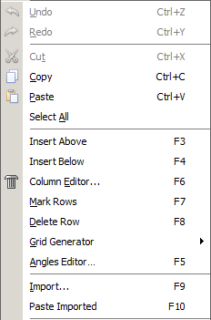

Edit Menu
The Edit menu provides access to a variety of data exchange and editing features. Most of these options become available when you start editing a database file from the Database Access window.

The most common editing options, including:
Undo
Redo
Cut
Copy
Paste
function the same way as they do in other Windows applications. These options are also accessible from the OptiChar Toolbar.
The Select All option allows you to select (mark) all rows of the current spreadsheet in one operation.
 Note: OptiChar supports a long Undo buffer, allowing users to
revert a sequence of operations flexibly. Each type of operation
that can be undone is reflected in the modification of the Undo
menu command. For example, actions like “Undo Cell,” “Undo Paste,”
etc., provide clear indications of what specific changes can be
reverted.
Note: OptiChar supports a long Undo buffer, allowing users to
revert a sequence of operations flexibly. Each type of operation
that can be undone is reflected in the modification of the Undo
menu command. For example, actions like “Undo Cell,” “Undo Paste,”
etc., provide clear indications of what specific changes can be
reverted.
In OptiChar, there is a specialized version of the Copy command known as Copy Special. This option is accessible through the right-click menu in certain windows that display plots.
In many spreadsheet applications, there are specialized options designed for editing that can significantly enhance user efficiency. These options can typically be activated through a menu item or by using specific keyboard shortcuts.
Insert Above (F3): Inserts a copy of the selected row(s) above the current selection.
Insert Below (F4): Inserts a copy of the selected row(s) below the current selection.
Column Editor… (F6): Opens the Column Editor, a specialized tool used to populate spreadsheet columns with constant or uniformly increasing (or decreasing) sets of values. The Column Editor can also be accessed from the / OptiChar Toolbar.
Mark Rows (F7): Used to select one or more rows for subsequent editing. Select the initial row to be edited and press the F7 key, then select the final row to be edited and press the F7 key again. The two specifically selected rows and all rows between them will be highlighted. Editing commands will apply only to the highlighted rows. Pressing the F7 key again while a row or group of rows is highlighted will deselect them and revert the rows to their normal state.
Delete Row (F8): Deletes the current row or a sequence of selected rows.
Grid Generator… (Shift+F4, Shift+F5, Shift+F6): An additional editing option to populate columns with data. It can be used to fill a column with data that increases or decreases uniformly or logarithmically. An inversely proportional set of values can also be generated. For more information, see the Grid Generator documentation.
Angles Editor… (F5): Opens a dialog window (see Angles Editor) that allows users to modify the number and values of incidence angles. When OptiChar is in Angular Mode (the selection of Spectral or Angular mode is made in the Configuration Menu), this item is replaced by Wavelengths Editor… (F5), which opens the Wavelengths Editor.
Import Data (F9): Command Enables users to Import Data from text files. In the Data Import dialog window, you can select text files, OptiLayer OUT files, or any other ASCII files.
Paste Imported (F10)…: Opens the Paste Buffer window, which is used to transfer selected data to database files.